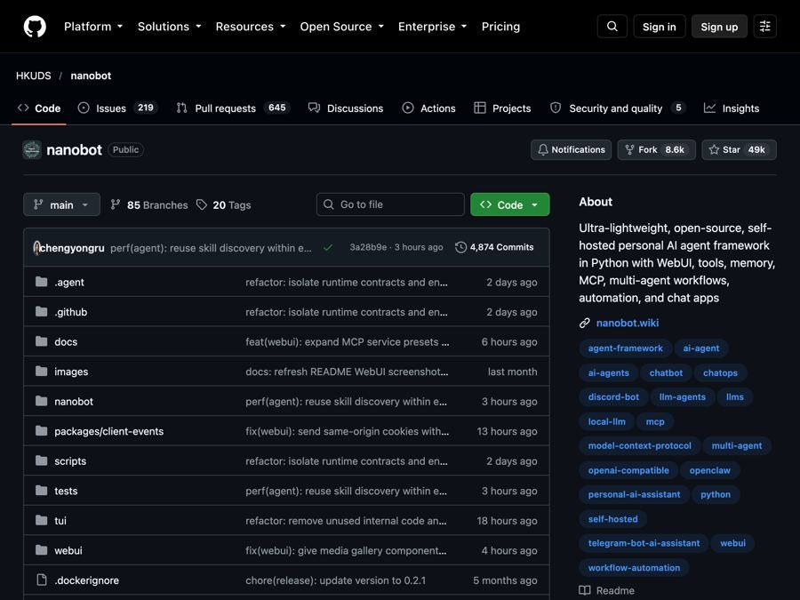

nanobot: a tiny personal AI assistant you run and own yourself
A small, free AI assistant you host yourself, then chat with in your browser, Telegram, Slack, Discord or email.

The problem it solves
Most AI assistants live inside someone else's app. You chat on their website, on their terms. Your chat history sits on their servers. And the assistant only works where they say it works.
Many people want something more personal. An assistant that shows up in the chat apps they already use. One that remembers their preferences, reads their files, and runs small jobs on a schedule. One they can control.
What it is
nanobot is a free, open-source personal AI agent. An "agent" is an AI that can take actions, not just chat. nanobot is "self-hosted," which means it runs on your own computer or server.
You talk to it in a browser window, in a terminal (the text-only command window), or in chat apps. It can work with your files, remember things, and run tasks at set times.
One key point: nanobot does not include the AI brain itself. You connect it to an AI model provider you choose, like an online AI service, or a model running on your own computer.
Who it's for
- Busy professionals who want an assistant inside Telegram, Slack or email.
- Small business owners who want help summarizing reports and running routine tasks.
- Teams that want a shared bot in Slack, Discord or Microsoft Teams.
- Privacy-minded people who want to host their own assistant.
- Tinkerers and developers who want a small, readable AI agent they can change.
What you can do with it
- Chat in many places. Browser, terminal, Telegram, Discord, Slack, WeChat, email, Mattermost, Linear, and more.
- Work with office files. It can read PDF, Word, Excel and PowerPoint files, for tasks like summing up a report.
- Remember preferences. It keeps chat history and long-term memory.
- Schedule tasks. Set up automations that run at set times, and see them on a calendar.
- Chase longer goals. Give it a goal and it keeps working across several steps.
- Use tools. Web search, image creation, and connections to other apps.
- Pick your AI model. Use online AI services or local models, with backups if one fails.
- See what it did. The browser view shows its steps, file changes and tool use.
- Keep chats side by side. Arrange up to four conversations on screen at once.
- Use temporary chats that are not saved to history or memory.
How to start, step by step
First, you need two things: a computer with Python 3.11 or newer, and access to an AI model provider. The installer handles Python setup for you. The README also has a guide called "Start Without Technical Background" if this is new to you.
- Run the installer. On Mac or Linux, open Terminal and paste:
curl -fsSL https://raw.githubusercontent.com/HKUDS/nanobot/main/scripts/install.sh | sh
On Windows, open PowerShell and paste:
irm https://raw.githubusercontent.com/HKUDS/nanobot/main/scripts/install.ps1 | iex
- Open the browser window. On a normal desktop, the installer opens it for you. If not, run
nanobot webui. Keep the Terminal window open while you use it. - Add your AI account. Go to Settings, then Models, and save your model provider details.
- Say hello. Start a new topic and send "Hello!" to check it works.
- Try a file task. Put a copy of a notes file in a practice folder, choose "Restricted" access, and ask it to summarize the file into a new one.
Already use uv (a Python tool installer)? You can run uv tool install nanobot-ai instead, then nanobot webui.
Good to know
- nanobot is free, the AI is not always. Model fees depend on the service you pick. Running a local model instead depends on your computer's power.
- Keep it running for schedules. Automations only run while nanobot's background service is on and your computer is awake. Missed times are not replayed.
- Guard the login link. The browser login link is a password. Only share access with people you trust.
- Chats still reach your AI provider. Even temporary chats are sent to whatever model service you set up.
- Check group settings. Before adding it to shared channels, check who is allowed to talk to it.
- License: MIT. Free to use, change and even use in business. Just keep the copyright notice.
The bottom line
nanobot gives you a personal AI assistant that lives where you already chat and stays under your control. You bring the AI model, and it brings memory, file skills and scheduling. Run the installer and say hello.
Get it: github.com/HKUDS/nanobot
📲 Watch the 30-second video on Instagram
Keep reading

DBX: one small free app to open and edit 100+ kinds of databases
DBX is a free, tiny app that lets you browse, search and edit over 100 kinds of databases, with an AI helper that writes queries for you.

PureMac: free up space on your Mac without a subscription
PureMac is a free, open-source Mac cleaner that removes junk, fully uninstalls apps, and never tracks you or tries to scare you.

Strata: run a big, private AI chatbot on your own gaming PC
A free one-click installer that runs a large Qwen AI model on a normal gaming PC, so your chats never leave your computer.